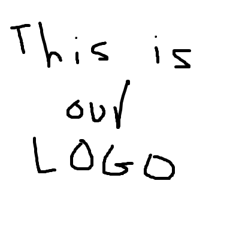

<!--
  Generated template for the HostGuestPage page.

  See http://ionicframework.com/docs/components/#navigation for more info on
  Ionic pages and navigation.
-->
<ion-content padding>
  <div class="center">
    <div class="grid-container">
      <div class="grid-item">
        
      </div>
      <div class="grid-item">
        <button ion-button block [navPush]="HostButton" >Host</button>
      </div>
      <div class="grid-item">
        <button ion-button block [navPush]="GuestButton" >Guest</button>
      </div>
    </div>
  </div>
</ion-content>
